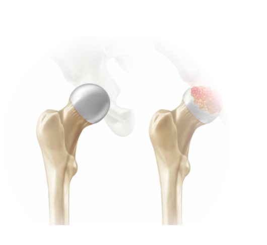

bone canal for implant fitting.
Device used to hold bones in alignment during reduction procedures.
Surgery performed to replace or repair a previously implanted hip prosthesis.
Surgery performed with the assistance of robotic systems for precision.
Forceps-like instrument used to remove bone or tissue.
Saw used for cutting bone in the sagittal plane.
Tool used for inserting or removing screws during surgery.
Retractor that maintains its position without manual holding.
Tool used to lift and retract skin during surgical procedures.
Tool used to remove the femoral stem if needed.
Tool used to insert the femoral stem into the bone canal.
Packaging that ensures the sterility of surgical instruments and implants.
Bone loss around an implant due to reduced load bearing on
surrounding bone.
Device used to remove fluids and debris from the surgical site.
Tool or system used to assist in the accurate placement of implants.
Instrument used to hold back tissue and provide a clear view of the surgical area.
Saw used for cutting bone during surgery.
Pre-operative planning tool used to simulate and guide implant placement.
Temporary component used to test fit and alignment of hip implants.
Temporary acetabular cup used to test fit and alignment.
Temporary femoral head used to test fit and range of motion.
Temporary femoral stem used to test fit and alignment.
Measurement of the rate at which implant materials wear down over time.
Process of closing and suturing the surgical incision.
